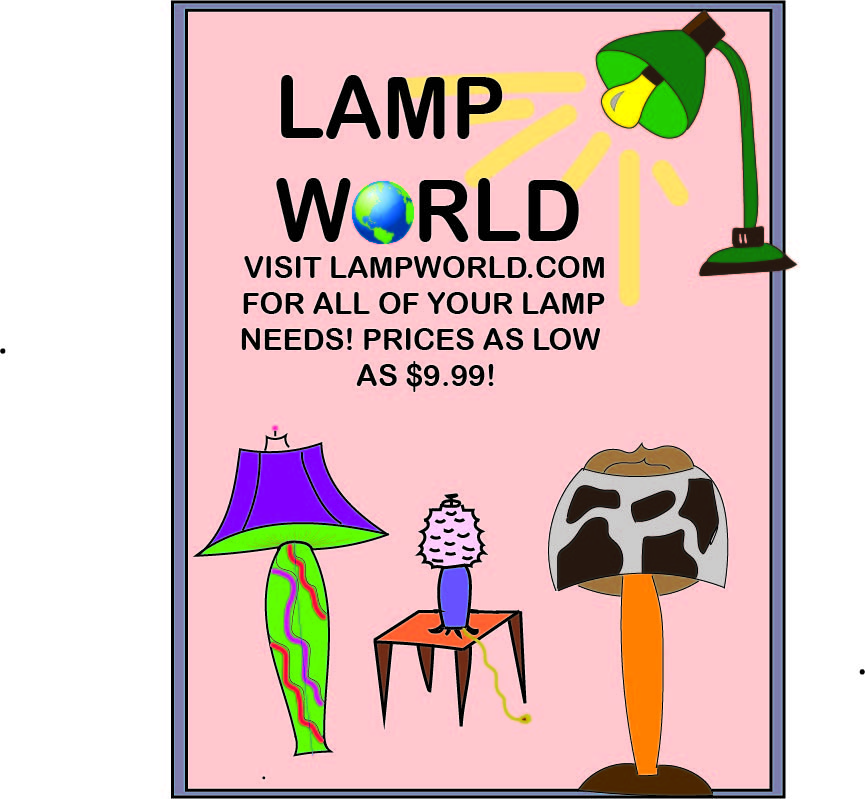

this is a poster/flyer I made about lamps. I like lamps. I don't really know if I like this poster. This took a long time to make and I don't love it. But it is something! Also. I don't know why it seems lowish quality. When exporting from illustrator into jpg, there is no quality setting.
If you want to donwload a PDF of this... here it is!
Download File